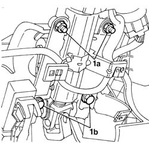
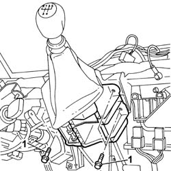
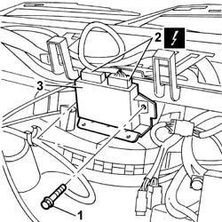
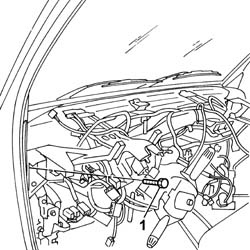

7040A97 FACIA TRIM SUPPORT BEAM - R R
- Path
- Procedures > 70 FITTINGS > 7040 BODY INTERIOR FITTINGS AND TRIM > 7040A PASSENGER COMPARTMENT TRIM > 7040A97 FACIA TRIM SUPPORT BEAM - R R
- Kind
- repair procedure (removal / refitting; the operation number is the code)
- Applies to
- all engines; all production periods
- Interactive page
- https://sloeber94.github.io/elrnDB-fDct/en/#/244001512
Applies to: all engines; all production periods
 Removing
Removing
 Refitting
Refitting- Disconnect the negative battery terminal.
Op. 5580C18 AIR BAG MODULE - R+R
Op. 4110A10 STEERING WHEEL - R+R FOR REPLACEMENT OR CHECKS
Op. 7040A26 STEERING COLUMN TRIM - R+R
Op. 7040A23 FRAME OF INSTRUMENT PANEL ON FACIA - R R
Op. 7040A18 GLOVE COMPARTMENT ON FACIA - ARRANGE
Op. 7040A19 CUSHION PADDING - R R
Op. 7040A20 LEFT DASHBOARD LOWER TRIM - R.R.
Op. 7040A07 UPPER COMPARTMENT ON FACIA - R R
Op. 7040A78 RADIO COMPARTMENT BOX R R
Op. 7040A72 UPPER CENTRAL DOCUMENT HOLDER ON DASHBOARD - R.R .
Op. 7065C10 AIR CONDITIONING CONTROL PANEL - R+R
Op. 7065C53 ASHTRAY COMPARTMENT FLAP-R R
Op. 7040A28 TRIM ON GEARBOX CONTROL PANEL - R.R.
Op. 7040A60 UNDER FACIA TRIM - R+R
Op. 7040A04 FACIA LOWER TRIM-R R
Op. 5010C12 WINDSCREEN DEMISING VENT - R.R.
-
Op. 7040A39 DEVICE FOR DRIVER`S SEAT SQUAB LUMBAR ADJUSTMENT - R R
- < R1 > [All]
Op. 7040A10 L/H OR R/H FRONT SEAT (ONE) - R+R
- < R1 > [All]
-
1. Undo the nuts (1a) and the bolts (1b) fixing the steering column to the crossmember.

Applies to: all engines; all production periods
- Remove the bonnet release lever.
1. Undo the bolts fixing the gearbox control lever support.
- Move the support aside.

Applies to: all engines; all production periods
- Disconnect the electrical connectors from the CODE control unit located under the gear lever.
 | Description | Connector |
|---|---|---|
. | CODE control unit | M020A |
| Description | Connector |
|---|---|---|
. | CODE control unit | M020B |
1. Undo the bolts fixing the electric windows and central locking control unit.
2. Disconnect the electrical connectors from the electric windows and central locking control unit.
| Description | Connector |
|---|---|---|
2 | Electric windows/central locking control unit | M135A |
| Description | Connector |
|---|---|---|
2 | Electric windows/central locking control unit | M135B |
3. Remove the electric windows and central locking control unit.

Applies to: all engines; all production periods
- Undo the bolts fixing the climate control unit to the crossmember.
- Disconnect the relays for the air conditioning fan.
| Description | Connector |
|---|---|---|
. | Passenger compartment air fan speed relay 1 | J034 |
| Description | Connector |
|---|---|---|
. | Passenger compartment air fan maximum speed relay | J041 |
- Open the dashboard wiring retaining bands.
1. Undo the bolts fixing the crossmember to the bodyshell.

Applies to: all engines; all production periods
Refitting
Removing- Fasten the crossmember to the bodyshell tightening the fixing bolts to the recommended torque.
 | Value - daNm | Fastening | Component | Ø |
|---|---|---|---|---|
. | 3,6 | Bolt | CROSSMEMBER SUPPORTING DASHBOARD TRIM | M10 X 1.25 |
- Fasten the climate control unit tightening the bolts fixing it to the crossmember.
- Connect the relays for the air conditioning fan.
| Description | Connector |
|---|---|---|
. | Passenger compartment air fan speed relay 1 | J034 |
| Description | Connector |
|---|---|---|
. | Passenger compartment air fan maximum speed relay | J041 |
- Fasten the electric windows/central locking control unit to the crossmember tightening the fixing bolts.
- Connect the electrical connectors to the electric windows and central locking control unit.
| Description | Connector |
|---|---|---|
2 | Electric windows/central locking control unit | M135A |
| Description | Connector |
|---|---|---|
2 | Electric windows/central locking control unit | M135B |
- Connect the electrical connectors to the CODE control unit
| Description | Connector |
|---|---|---|
. | CODE control unit | M020A |
| Description | Connector |
|---|---|---|
. | CODE control unit | M020B |
- Fasten the gear lever support to the crossmember tightening the fixing bolts.
- Fit the bonnet release lever.
- Fasten the support and steering control shafts to the dashboard supporting crossmember tighten the nuts and bolts to the recommended torque.
| Value - daNm | Fastening | Component | Ø |
|---|---|---|---|---|
. | 1,5 | Nut | STEERING SHAFT MOUNTING | M8 |
| Value - daNm | Fastening | Component | Ø |
|---|---|---|---|---|
. | 1,5 | Bolt | STEERING SHAFT MOUNTING | M8 |
Op. 7040A10 L/H OR R/H FRONT SEAT (ONE) - R+R
Op. 7040A39 DEVICE FOR DRIVER`S SEAT SQUAB LUMBAR ADJUSTMENT - R R
- < R1 > [All]
Op. 5010C12 WINDSCREEN DEMISING VENT - R.R.
- < R1 > [All]
Op. 7040A04 FACIA LOWER TRIM-R R
Op. 7040A60 UNDER FACIA TRIM - R+R
Op. 7040A28 TRIM ON GEARBOX CONTROL PANEL - R.R.
Op. 7065C53 ASHTRAY COMPARTMENT FLAP-R R
Op. 7065C10 AIR CONDITIONING CONTROL PANEL - R+R
Op. 7040A72 UPPER CENTRAL DOCUMENT HOLDER ON DASHBOARD - R.R .
Op. 7040A78 RADIO COMPARTMENT BOX R R
Op. 7040A07 UPPER COMPARTMENT ON FACIA - R R
Op. 7040A20 LEFT DASHBOARD LOWER TRIM - R.R.
Op. 7040A19 CUSHION PADDING - R R
Op. 7040A18 GLOVE COMPARTMENT ON FACIA - ARRANGE
Op. 7040A23 FRAME OF INSTRUMENT PANEL ON FACIA - R R
Op. 7040A26 STEERING COLUMN TRIM - R+R
Op. 4110A10 STEERING WHEEL - R+R FOR REPLACEMENT OR CHECKS
Op. 5580C18 AIR BAG MODULE - R+R
- Connect the negative battery terminal.
Topics linked from this page (20)
- 4110A10 STEERING WHEEL - R+R FOR REPLACEMENT OR CHECKS
- 5010C12 WINDSCREEN DEMISING VENT - R.R.
- 5560C22 TACHOGRAPH - R.R.
- 5580C18 AIR BAG MODULE - R+R
- 7040A04 FACIA LOWER TRIM-R R
- 7040A07 UPPER COMPARTMENT ON FACIA - R R
- 7040A10 L/H OR R/H FRONT SEAT (ONE) - R+R
- 7040A18 GLOVE COMPARTMENT ON FACIA - ARRANGE
- 7040A19 CUSHION PADDING - R R
- 7040A20 LEFT DASHBOARD LOWER TRIM - R.R.
- 7040A23 FRAME OF INSTRUMENT PANEL ON FACIA - R R
- 7040A26 STEERING COLUMN TRIM - R+R
- 7040A28 TRIM ON GEARBOX CONTROL PANEL - R.R.
- 7040A39 DEVICE FOR DRIVER`S SEAT SQUAB LUMBAR ADJUSTMENT - R R
- 7040A60 UNDER FACIA TRIM - R+R
- 7040A72 UPPER CENTRAL DOCUMENT HOLDER ON DASHBOARD - R.R .
- 7040A78 RADIO COMPARTMENT BOX R R
- 7065C10 AIR CONDITIONING CONTROL PANEL - R+R
- 7065C42 ASHTRAY (ONE) R+R
- 7065C53 ASHTRAY COMPARTMENT FLAP-R R